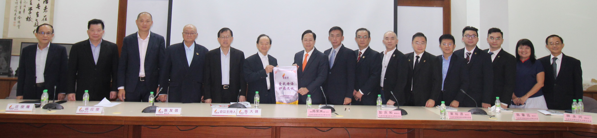

留台联总莅访董总 携手维护和发展华教
董总代表与留台联总代表合影。左起为杨才国、杨安山、庄俊隆、杨应俊、陈友信、陈大锦、陈荣州、彭庆和、黄裕源、陈章远、林永兴、彭道章、陈闻骢、陈威膨、林敏慎、廖伟强。2022年8月8日，马来西亚留台校友会联合总会（留台联总）会长拿督陈荣洲局绅率团莅访董总，受到董总主席陈大锦率同多位中央委员和行政部相关主管的热烈欢迎。双方就当前华教课题进行交流。
陈大锦在致欢迎词时表示，留台联总自1974年创立以来，凝聚全马各地的留台校友会，成为留台人的代表机构，争取政府承认留台学位。数十年来，在重大的华教课题上，留台联总始终与董总步伐一致，比如在2019年爪夷字课题和挑战华淡小地位课题方面，留台联总积极地联合董总、教总和其他华团一同站稳立场，发表联合声明，维护与发展多源流学校体系，以及捍卫母语教育乃是各族群不容剥夺的基本人权。
陈荣洲致词时说，董总长期致力于维护华教的生存与发展，对于董总目前为了推动华教更大的发展，所发起的建设董总华教综合大厦的计划，留台联总将鼎力支持，同时会透过一系列活动，协助董总华教综合大厦的建设。无论是董总抑或留台联总，长期以来都是致力于为国家培育人才。留台联总将于8月19日至27日分别于吉隆坡、吉打和柔佛举办台湾高教展，并扩大赴台升学的重点工作，特别是将大力鼓励非华裔学生到台湾升学，无论是华裔或非华裔赴台升学，学成归来一定会成为国家发展的栋梁。
当天其他与会者包括董总署理主席陈友信、副主席杨应俊、秘书长庄俊隆、财政杨安山、副秘书长杨才国、执行长梁胜义、副执行长（总务处）兼资料与档案局局主任锺伟前、副执行长（学务处）兼教师教育局局主任曾庆方、学生事务局局主任颜彣澔、秘书室主任江伟俊和会务与组织局局主任林纪松；留台联总代表包括署理会长彭庆和、副会长黄裕源、陈章远、林永兴、彭道章、秘书陈闻骢、理事廖伟强、陈威膨、林敏慎和秘书处副行政主任许素婷。